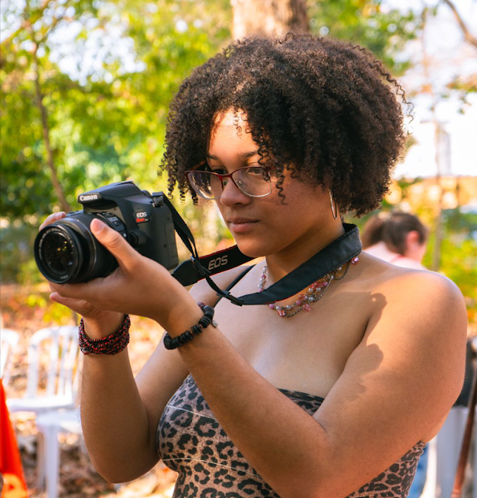

Sobre Mim
Poeta, fotógrafa e entusiasta do design, estou em constante transição entre a arte e a tecnologia. Atualmente, foco meu desenvolvimento em front-end (HTML, CSS e JavaScript) para dar vida a projetos que priorizam a estética e a experiência do usuário. Trago comigo a disciplina e a riqueza cultural da percussão afro, aplicando um olhar crítico e sensível em tudo o que construo. Busco oportunidades onde eu possa somar minha bagagem cultural ao desenvolvimento de interfaces criativas.
Experiências
- Aprendiz alimentador de linha de produção na FLEXTRONICS INTERNATIONAL TECNOLOGIA LTDA pela empresa ITEMM em jaguariúna.
Cursos
- Pacote Office 2016 (110 horas) - Fundação Bradesco
- IA para seu novo emprego: Do currículo à entrevista - Fundação Bradesco
- Assistente Administrativo no Serviço Público - IFRS